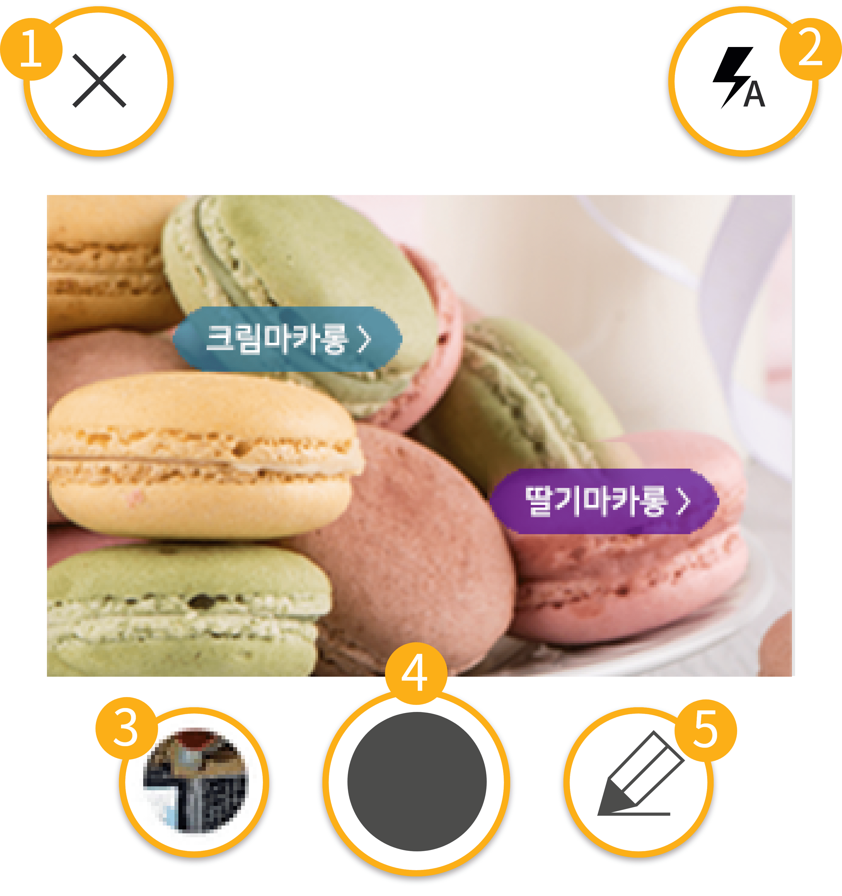

뒤로가기
식단 입력
카메라
알람
2021.06.20
달력
식단을 선택하면 상세 영양 정보를 볼 수 있습니다.
아침
점심
저녁
간식
건강 관리의 시작
은 좋은 것을 적절히 먹는 것이에요. 무엇을 얼마나 드시나요?
식단 입력 안내
식단을 입력하는 방법이 궁금하신가요?

1.
[x] 카메라 창을 닫습니다.
2.
[icon] 카메라의 플래시를 조정합니다.
3.
갤러리(사진첩)에 저장된 사진을 선택할 수 있습니다.
4.
카메라로 직접 촬영해서 전송합니다.
5.
검색을 이용하거나 직접 입력할 수 있습니다.
다시 보지 않기
닫기